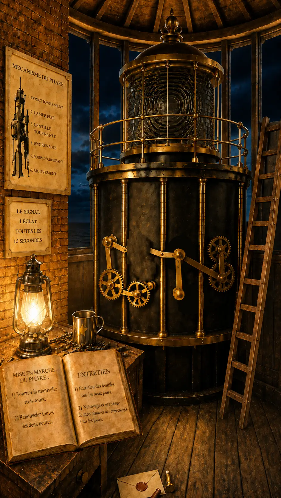
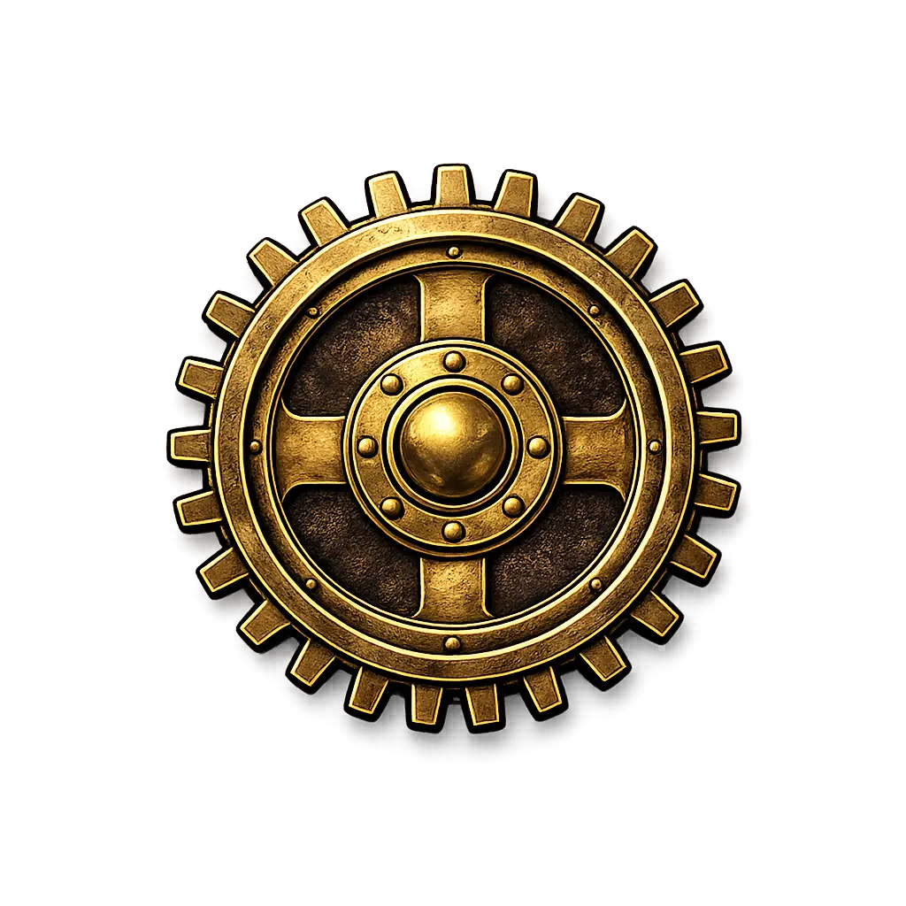
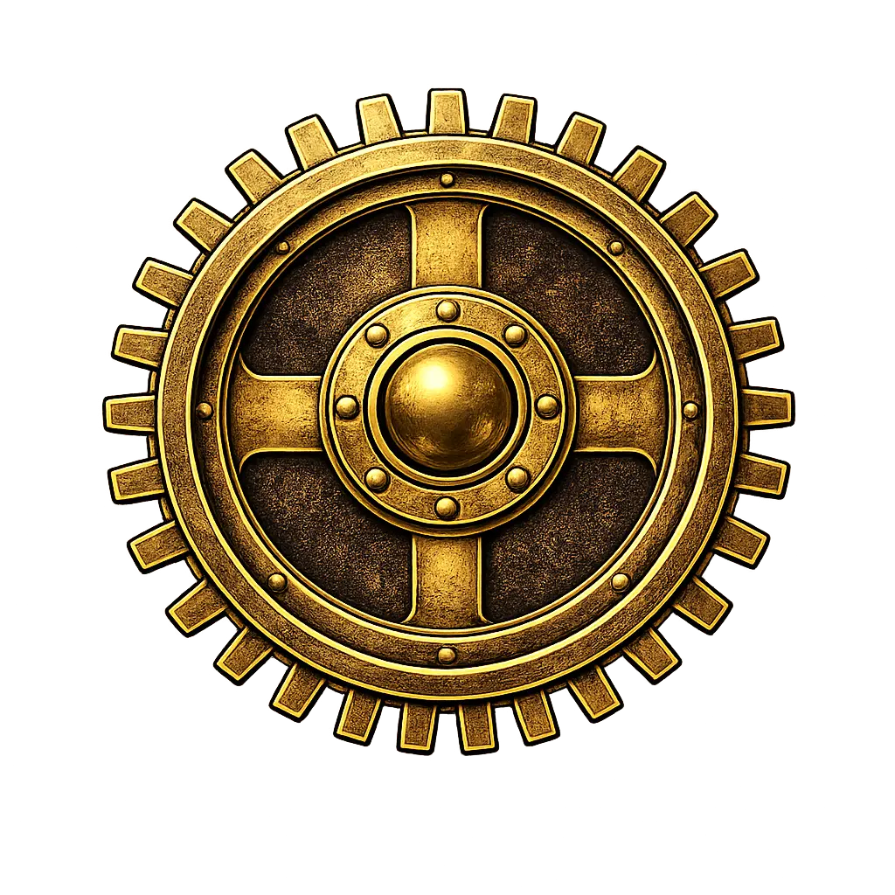
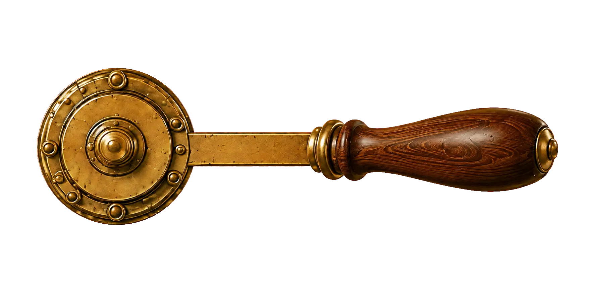
Pose ton doigt sur la manivelle et effectue trois tours sur l’écran.
17 février · Anno Domini 1840
Pointe de Saint-Mathieu, Bretagne
Billig, le chien-guide des aventuriers, vient de trouver une mystérieuse enveloppe…
Touche-la pour l'ouvrir !
Le cachet de cire est brisé...
appuie sur l'enveloppe
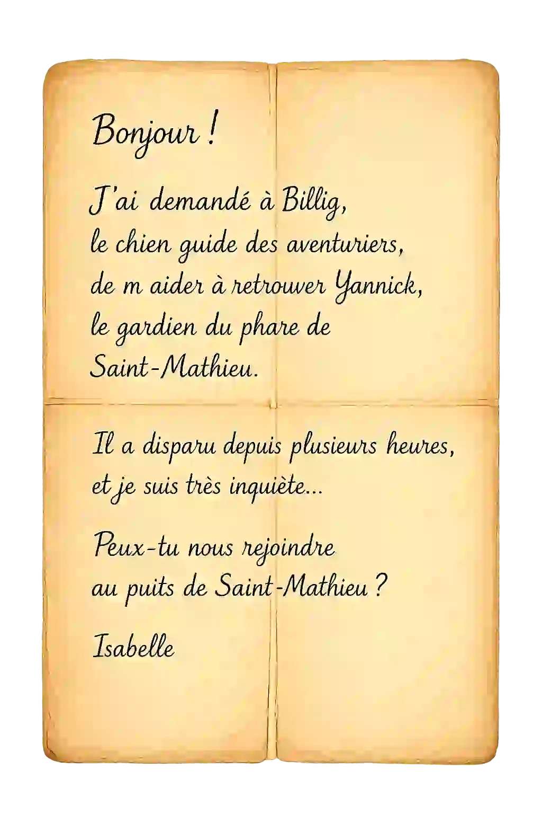
Te voilà devant le puits de Saint-Mathieu.
Mais il n'y a personne…
Isabelle t'avait pourtant donné rendez-vous ici.
Elle a peut-être laissé un indice !
Première lettre de la 7e ligne
Première lettre de la 12e ligne
Dernière lettre de la 19e ligne
Première lettre de la 21e ligne
Première lettre de la 1re ligne
Près du puits, tu trouveras deux grands panneaux du côté de la route.
Cherche celui qui est écrit en français.
Fais glisser les pièces pour remettre l’image dans le bon ordre.
Explore les alentours de la chapelle !
Observe bien les panneaux, les symboles, les dates et les objets. L’un de ces éléments pourrait te donner un indice très utile pour la suite.
Ensuite, retrouve-nous devant la porte du phare
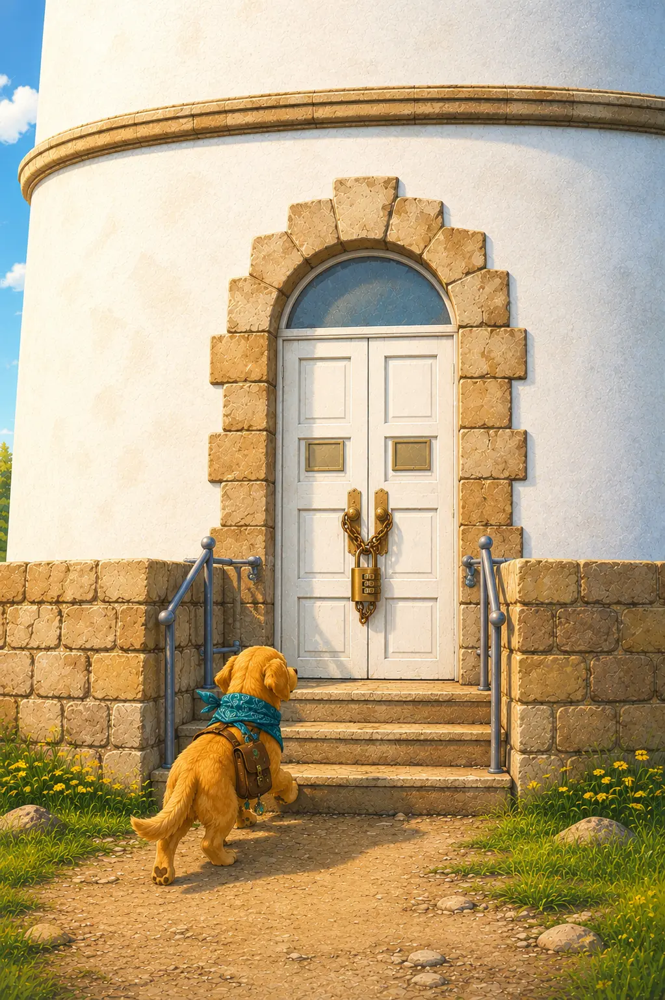
La porte semble fermée…
La porte est verrouillée par un cadenas à code.
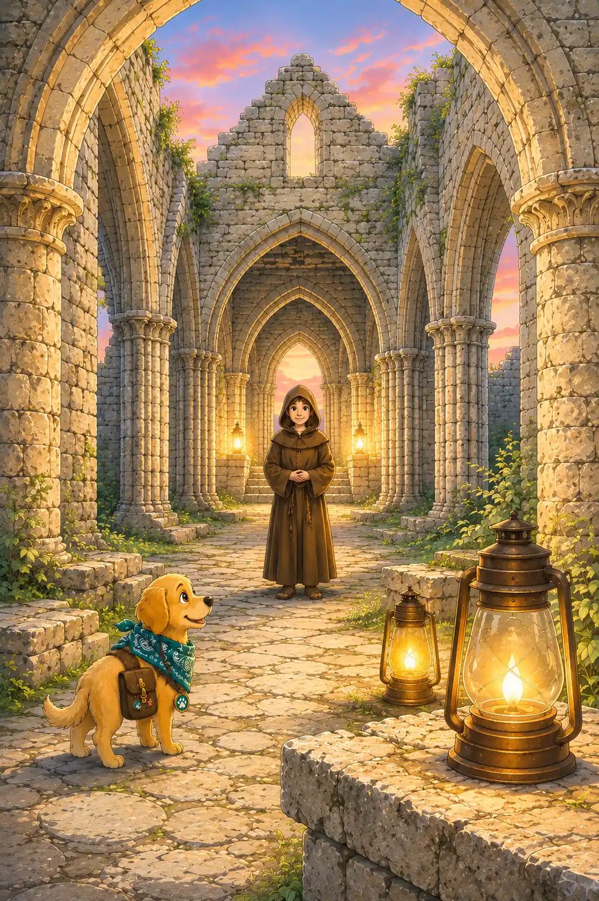
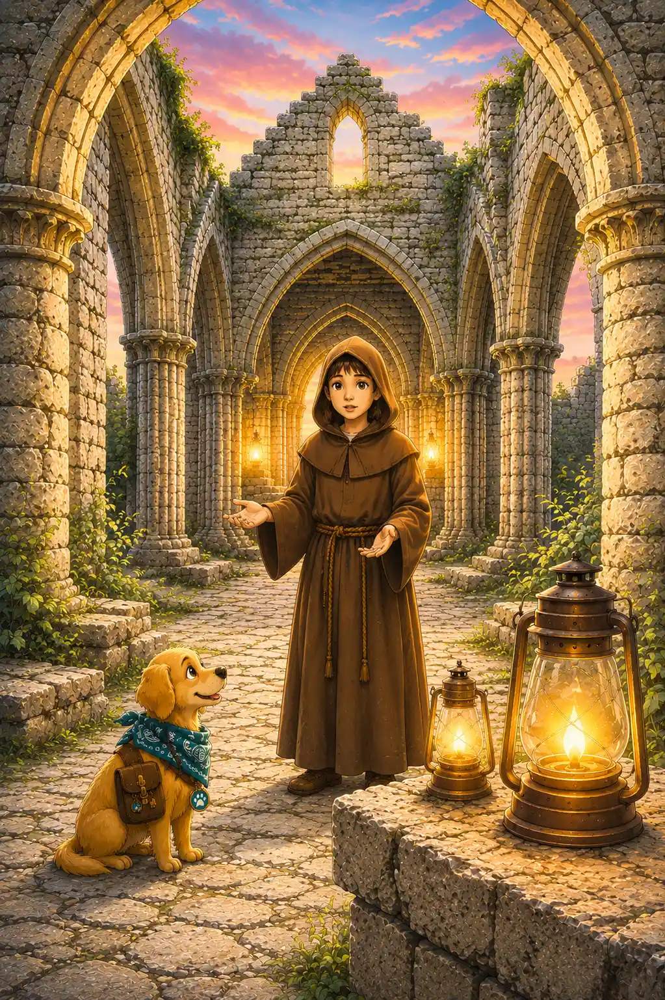
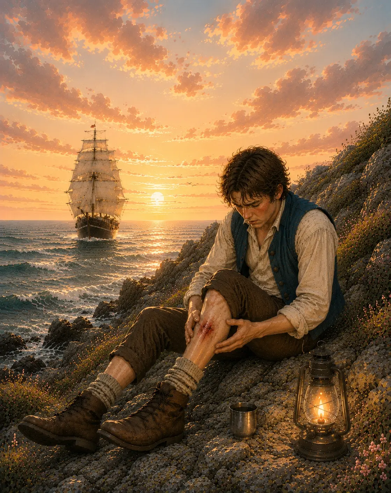
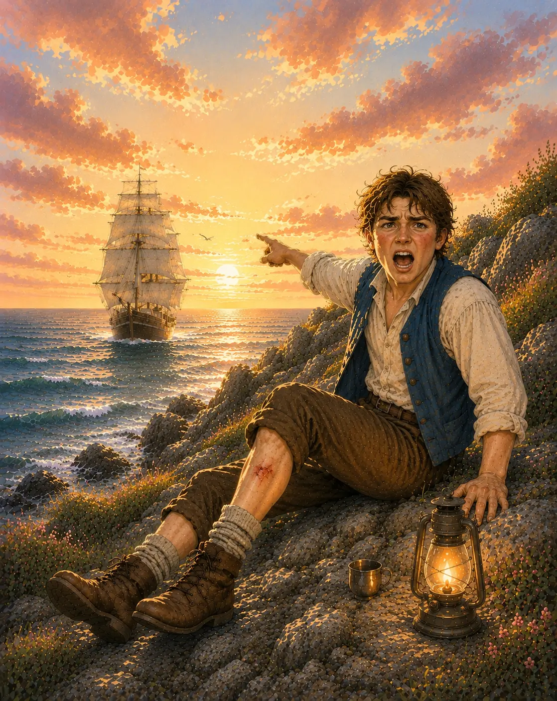
Entre le code à 4 chiffres pour ouvrir le cadenas :
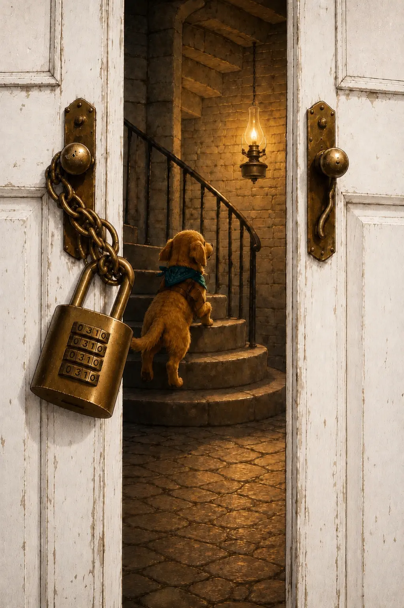
Bravo ! Le cadenas s’ouvre !



